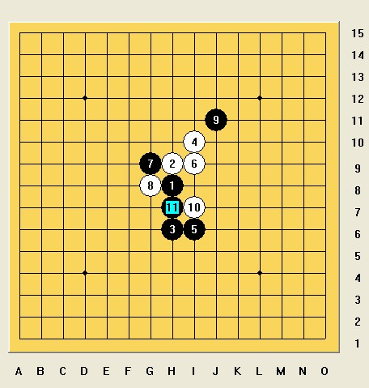

[学术讨论] 瑞星中的这个11很少见!是必败吗?
首页
茗弈阁
#1 [学术讨论] 瑞星中的这个11很少见!是必败吗? 作者：闫荣辉 发表时间：2008-11-2 1:30:57
瑞星中的这个11很少见!是必败吗?如何杀?
［此帖子已被 茗弈小刀 在 2009-4-22 20:08:49 编辑过］
#2 Re:瑞星中的这个11很少见!是必败吗? 作者：lfc 发表时间：2008-11-2 9:21:39
=======上图对应的爱五子棋谱代码如下，以便你拆解：========
h8h9h6i10i6i9g9g8j11i7h7h10
======================================================
#3 Re:瑞星中的这个11很少见!是必败吗? 作者：茗弈小刀 发表时间：2008-11-2 12:49:42
这个11也有骗的成份，但不是必败，白有优势，但黑可下。
#4 Re:瑞星中的这个11很少见!是必败吗? 作者：闫荣辉 发表时间：2008-11-2 14:37:47
哦!谢谢lfc!谢谢姐姐!
#5 Re:瑞星中的这个11很少见!是必败吗? 作者：刀魂 发表时间：2008-11-2 15:32:04
我觉得 小刀说的 不对，这个11 是必败，我请教过了 冰魔，并且和他下过，结果证明是 必败。。。
#6 Re:瑞星中的这个11很少见!是必败吗? 作者：闫荣辉 发表时间：2008-11-2 16:12:17
哦, 那谁能发个谱吗?
那谁能发个谱吗?
#7 Re:瑞星中的这个11很少见!是必败吗? 作者：红豆 发表时间：2008-11-2 17:19:46
12 K7 行不
#8 Re:瑞星中的这个11很少见!是必败吗? 作者：飞熊 发表时间：2008-11-3 7:59:17
必败的谱发上来看看啊
#9 Re:瑞星中的这个11很少见!是必败吗? 作者：刀魂 发表时间：2008-11-3 8:10:22
必败的，前提是 前30手 防守黑棋的 外围。。。。
#10 Re:瑞星中的这个11很少见!是必败吗? 作者：茗弈小刀 发表时间：2008-11-3 13:25:50
刀魂摆个局我们学习下呢。反正这个11我比较爱下，也没见谁轻易能杀。没有地毯就不能说是败吧。或许你有更简单的杀法？
#11 Re:瑞星中的这个11很少见!是必败吗? 作者：茗弈小刀 发表时间：2008-11-4 12:19:29
刀魂咋不摆出来？你不给你小刀师姐扛锄头了吗？
#12 Re:瑞星中的这个11很少见!是必败吗? 作者：兔子哥哥 发表时间：2008-11-4 18:59:27
呵呵这个11我也爱下，06年就开始下了，并研究了一下，黑白都平衡的，都有机会。
#13 Re:瑞星中的这个11很少见!是必败吗? 作者：雅典娜 发表时间：2008-11-7 9:00:45
,都不知道听谁的好了!全是老师父,我觉得黑先丢先手很可怕!
#14 Re:Re:瑞星中的这个11很少见!是必败吗? 作者：闫荣辉 发表时间：2008-11-7 19:39:03
引用：
原文由 雅典娜 发表于 2008-11-7 9:00:45 :
,都不知道听谁的好了!全是老师父,我觉得黑先丢先手很可怕!
9494
#15 Re:瑞星中的这个11很少见!是必败吗? 作者：wrwak 发表时间：2008-11-11 15:13:17
大必败定式
#16 Re:瑞星中的这个11很少见!是必败吗? 作者：战龙在野 发表时间：2008-12-12 19:52:11
这个11也败？我晕。。很强很强
#17 Re:瑞星中的这个11很少见!是必败吗? 作者：侯军学棋 发表时间：2008-12-20 18:43:32
=======上图对应的爱五子棋谱代码如下，以便你拆解：========
h8h9h6i10i6i9g9g8j11i7h7h10h5h4g6f7e6f6j7g4i8
======================================================瑞星11